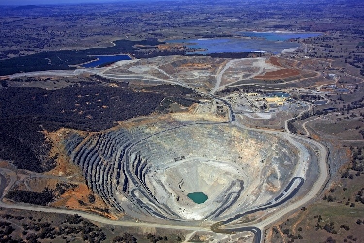
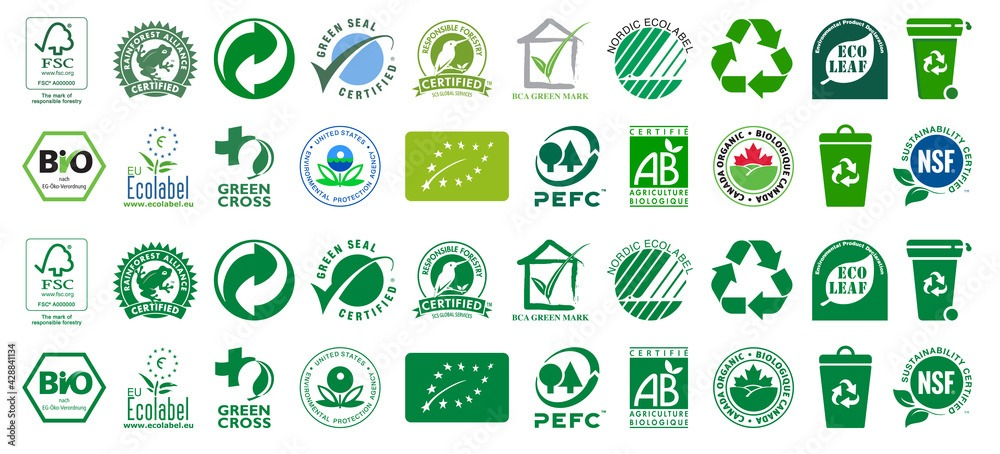
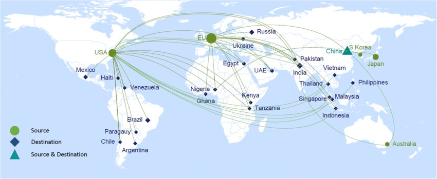
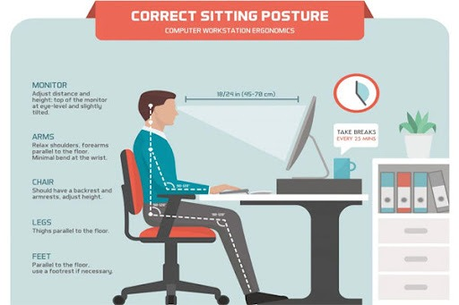
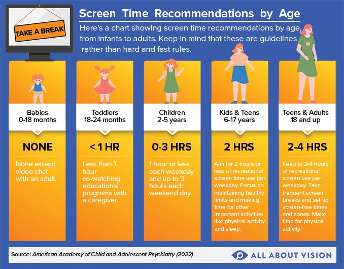
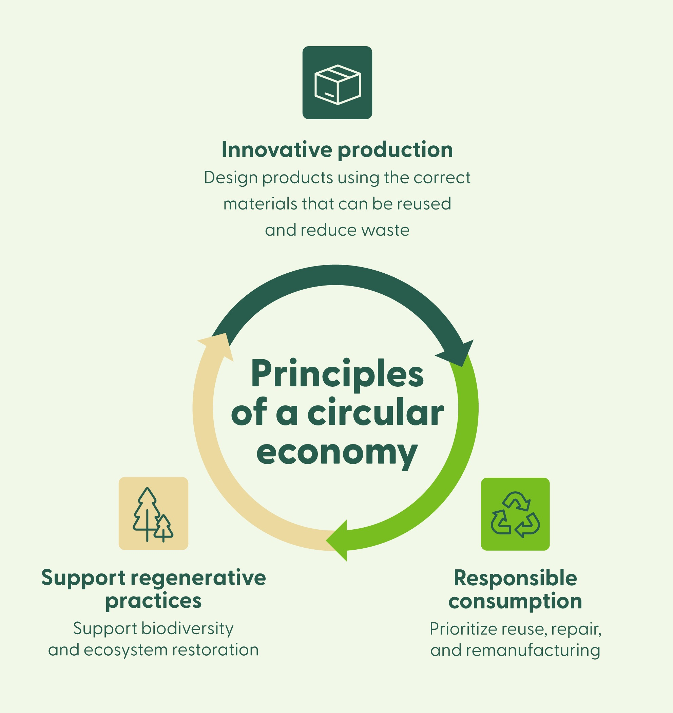
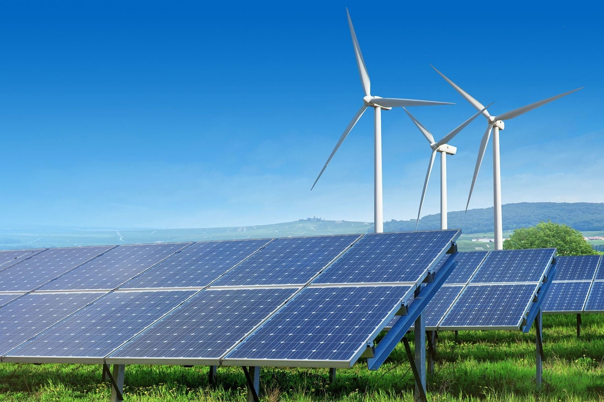

What are the main issues regarding technology and the environment?
Resource extraction and mining

Mining for lithium, cobalt, rare earths and other metals used in electronics can destroy habitats, contaminate water and soil, and create social harms for local communities. These activities often involve large-scale land clearing, tailings, and heavy water use that leave long-term environmental legacies.
Manufacturing and supply-chain pollution
Manufacturing electronics is energy- and water-intensive and uses hazardous chemicals. Factories can discharge effluents and produce industrial waste, contributing substantially to the lifecycle footprint of devices.
Energy use and greenhouse gas emissions
Devices, networks and data centres consume significant electricity. When that electricity comes from fossil fuels, technology-related energy use contributes to greenhouse gas emissions and climate change, a growing concern with the rise of cloud services and AI workloads.
Electronic waste (e-waste) and end-of-life management
Rapid device turnover and limited repairability produce increasing volumes of e-waste. When processed informally or shipped illegally, e-waste releases toxic metals and persistent chemicals that harm people and ecosystems.
Planned obsolescence and poor product design
Products that are difficult to repair, upgrade, or recycle shorten lifespans and increase waste. Design decisions — glued batteries, proprietary parts, or missing repair information — drive early replacement.
What can individuals do right now to improve technology's impact on the environment?
Buy less and choose durable, repairable products
Prefer devices with longer support windows, modular or repairable designs, and recognized eco-labels such as Energy Star or EPEAT. Buying refurbished or certified pre-owned devices reduces demand for new materials.
Extend lifespan: repair, upgrade and maintain
Repair broken items, replace batteries, and add storage where possible. Use local repair cafés or professional refurbishers to keep devices in service longer.
Reduce energy use and digital waste
Enable power-saving features, turn off unused devices, and avoid leaving cloud resources (e.g., idle virtual machines) running. Lower streaming resolutions when high quality isn't necessary and delete unnecessary files to reduce storage load.
Responsible disposal and recycling
Use certified recyclers and manufacturer take-back programs. Do not burn or dump e-waste; always wipe personal data before disposal and follow local guidance for hazardous components.
Advocate and support policy
Support right-to-repair laws, Extended Producer Responsibility (EPR) schemes, and green procurement policies through petitions, local advocacy, or workplace initiatives.
What are governments doing to encourage better practices?
Regulation and Extended Producer Responsibility (EPR)
According to the OECD's 2024 report on EPR schemes, jurisdictions implementing mandatory EPR have seen a 45% increase in formal e-waste collection rates. These policies require manufacturers to finance collection and recycling, effectively shifting end-of-life costs upstream to incentivize better product design.
Standards and procurement policies

The EU's 2024 Ecodesign Directive requires all electronic devices to meet repairability standards and provide spare parts for 7-10 years. Government procurement policies increasingly mandate EPEAT Gold certification, driving market demand for sustainable electronics.
International agreements

The Basel Convention's Plastic Waste and E-waste Amendments (2024) strengthen controls on transboundary movements of e-waste. Over 180 countries have committed to preventing illegal waste shipments and ensuring environmentally sound management of e-waste.
Research funding and innovation support
The IEA reports that government R&D funding for e-waste recycling technologies reached $2.5 billion globally in 2024, supporting development of advanced recovery processes for critical minerals and rare earth elements.
What are communities doing to encourage better practices?
Local recycling initiatives
The EPA's 2024 Best Practices Guide highlights successful community e-waste collection programs using hydrometallurgical recycling techniques, which recover up to 98% of precious metals while minimizing environmental impact. These programs typically combine regular collection events with permanent drop-off facilities.
Repair and refurbishment networks
Community repair cafés and refurbishment centers have grown by 300% since 2023, according to the Repair.org 2024 Impact Report. These initiatives provide tools, expertise, and training while creating local jobs in device repair and refurbishment.
Education and awareness campaigns
Local organizations partner with certified e-waste recyclers to demonstrate proper dismantling techniques and the importance of data security. The E-Stewards' Digital Equity program has helped communities establish 150 new certified refurbishment centers in 2024.
Circular economy partnerships
Community-business partnerships, documented in the Ellen MacArthur Foundation's 2024 case studies, show how local repair businesses, schools, and manufacturers can collaborate to extend product lifespans and create closed-loop material systems.
How does technology negatively impact humans?
Toxic exposures from e-waste and recycling
Informal e-waste processing releases lead, mercury, cadmium and flame retardants. These substances can cause neurological damage, developmental problems in children, respiratory illness and other long-term health effects.
Occupational hazards in mining and manufacturing
Workers in mines and factories may be exposed to dust, chemicals, unsafe machinery and poor working conditions, increasing risks of respiratory disease, chemical injuries, and chronic illnesses.
Ergonomic and musculoskeletal issues

Poor workstation setup and prolonged screen time can lead to eye strain, neck and back pain, and repetitive strain injuries. Proper ergonomics and regular breaks reduce these risks.
Mental health and social effects

Heavy use of digital platforms can contribute to stress, anxiety, disrupted sleep and reduced attention spans. Balancing connectivity and downtime supports wellbeing.
Environmental justice and inequality
Marginalized communities often bear disproportionate harms from extraction, manufacturing and informal recycling, experiencing higher exposure and fewer resources to mitigate impacts.
Strategies to reduce technology's environmental and health impacts
Design for circularity

Promote repairability, modularity and recyclability in products. Support right-to-repair laws, standard fasteners, and clear disassembly instructions so devices can be maintained and materials recovered.
Clean energy and efficiency

Move data centres and networks to renewable electricity and improve software and hardware efficiency. Optimize workloads and adopt energy-efficient architectures to reduce GHGs.
Responsible sourcing and supply-chain transparency
Require due diligence for minerals, improve traceability, and enforce labour and environmental standards to reduce harms in extraction and manufacturing.
Scale EPR and regulation
Implement and enforce EPR, restrict hazardous substances, and require material recovery targets and take-back programs with clear metrics and penalties for noncompliance.
Expand safe recycling and refurbishment
Invest in certified recycling facilities, create local refurbishment centers, and provide training and standards for safe e-waste processing to protect workers and recover materials.
Consumer education and improved labelling
Provide clear labels for energy use, repairability and recyclability. Run campaigns to teach consumers about repair, reuse and responsible disposal.
Research, standards and collaboration
Support R&D into less-toxic materials and better recovery technologies, and harmonize international standards to scale solutions across markets.
EPA (2024). "Best Practices in E-waste Collection and Recycling: Community Program Guide." United States Environmental Protection Agency. [Online]. Available: https://www.epa.gov/electronics